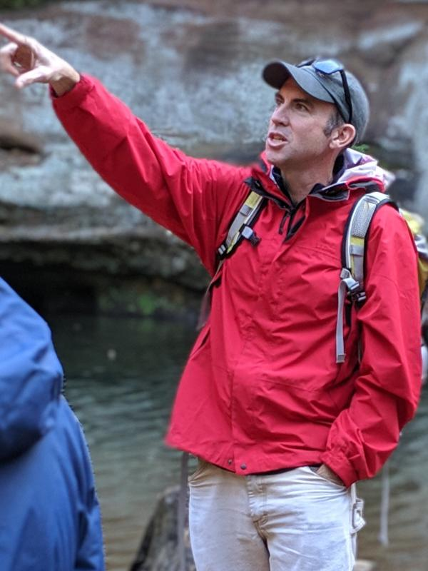
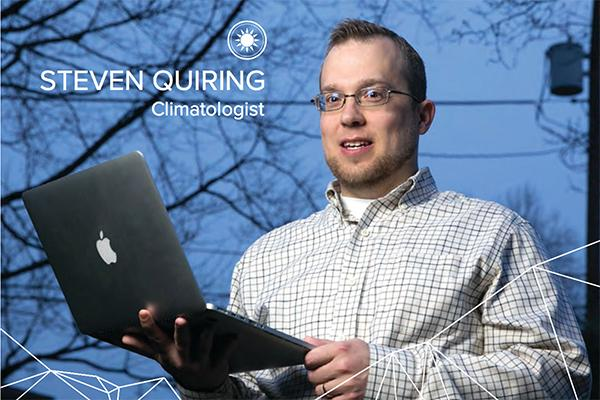

Director
BuckAI Observatory was founded and is directed by:

I am a Professor in the School of Earth Sciences and founding Director of the BuckAI Observatory (August 2025). My research spans two directions: 15+ years of developing higher-order finite element methods for multiphase subsurface flow, CO₂ sequestration, and natural hydrogen reservoirs (4 patent families, 10 issued patents); and, more recently, deep learning applied to multi-modal satellite imagery for river mapping, coastal bathymetry, natural hydrogen prospecting, and deforestation monitoring in Sub-Saharan Africa. Before joining OSU in 2013, I completed postdoctoral work at the Reservoir Engineering Research Institute (Palo Alto) with Abbas Firoozabadi, and at the University of Rochester (NASA grant). My PhD is in astrophysics from Radboud University Nijmegen.
Scientific Advisory Board
Four distinguished OSU faculty provide strategic guidance on research direction and partnerships.

Ian Howat is one of the world's leading experts on ice sheet dynamics and remote sensing of the cryosphere. His work spans Greenland ice sheet change, outlet glacier dynamics, and the development of satellite-based tools for monitoring polar ice. He previously directed the Byrd Polar & Climate Research Center.

Steven Quiring's research focuses on climate and weather extremes, drought monitoring, soil moisture, and the societal impacts of hydrometeorological hazards. He applies satellite remote sensing and machine learning to understand variability in the climate system and its effects on human and natural systems.
Dongbin Xiu is an Ohio Eminent Scholar and leading expert in scientific machine learning, uncertainty quantification, and data-driven methods for complex systems. His work on stochastic modeling, deep neural networks for scientific computing, and data-driven dynamical systems brings cutting-edge AI methodology expertise to the BuckAI community.
Yuan-Sen Ting works at the frontier of AI applied to large astronomical datasets — developing self-supervised learning, generative models, and foundation model approaches for spectroscopic surveys. His expertise in modern deep learning for massive observational archives provides BuckAI with direct methodological connections to the state of the art in AI for science.
Affiliated Faculty
Fifteen affiliated faculty across OSU contribute expertise in hydrology, geodesy, ecology, forest science, atmospheric science, and GIS to the BuckAI community.